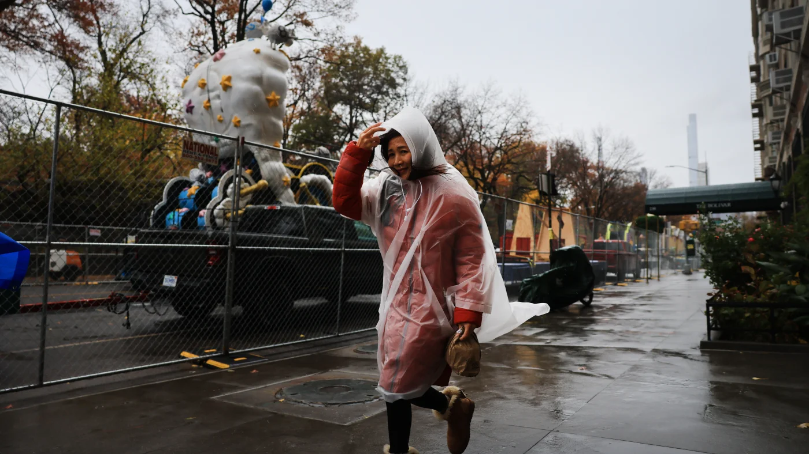
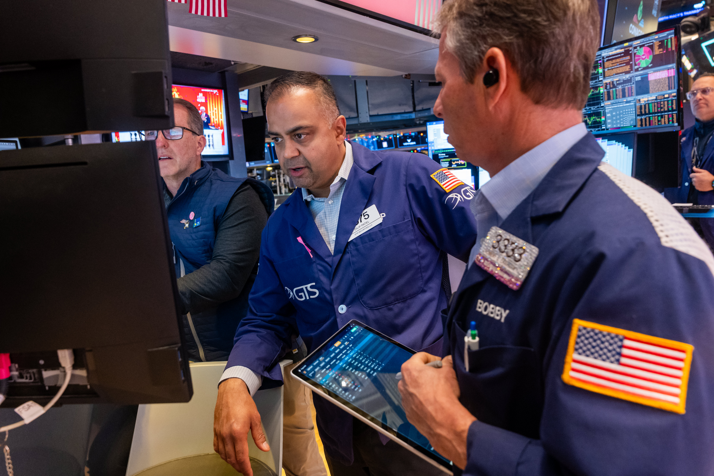

Independent AI-assisted summaries of linked reports. Headlines, dates and source URLs are supplied by NewsAPI; summaries are not independent verification of full articles. Please read original reports for details.
01

常设建筑委员会公开听证会
Permanent Building Committee Public Hearing
常设建筑委员会将于2026年12月2日举行混合形式的公开听证会，介绍拟建的新韦斯顿消防站。
The Permanent Building Committee will hold a hybrid Public Hearing on December 2, 2026, to present the proposed new Weston Fire Station.
Town of Weston Massachusetts · 2026-11-27
原始报道 / Original source ↗02
爱国者与充电器预计将迎来NFL历史上最缺乏经验的非新秀四分卫对决
Patriots & Chargers expected to draw one of the least experienced non-rookie QB matchups in NFL history
汤米·德维托只有八场职业首发，而D.J. 乌亚加莱莱将在周日首次首发。
Tommy DeVito only has eight career starts, while D.J. Uiagalelei will be making his first career start Sunday.
Boston.com · 2026-11-27
原始报道 / Original source ↗03
罗德岛消防员飞往布洛克岛扑灭感恩节大火
RI firefighters fly to Block Island to battle Thanksgiving blaze after storm scuttles ferry
志愿消防员在风暴假期期间出动，帮助扑灭了一场两警报火灾。
Volunteer firefighters stepped up to help put out a two-alarm fire during the stormy holiday.
Boston.com · 2026-11-27
原始报道 / Original source ↗04
大卫·帕斯特纳克因伤离开布鲁因斯比赛
David Pastrnak leaves Bruins game with injury and more takeaways from loss to Maple Leafs
大卫·帕斯特纳克因伤离开比赛，更多关于输给枫叶队的总结。
David Pastrnak leaves Bruins game with injury and more takeaways from loss to Maple Leafs.
Boston.com · 2026-11-27
原始报道 / Original source ↗05
爱国者队宣布四名首发球员缺席充电器比赛
Patriots rule out four starters including A.J. Brown ahead of Chargers game
德雷克·梅耶、A.J.布朗、罗密欧·道布斯和卡尔顿·戴维斯预计将缺席周日的比赛。
Drake Maye, A.J. Brown, Romeo Doubs, and Carlton Davis are expected to miss Sunday's game.
Boston.com · 2026-11-27
原始报道 / Original source ↗
国际油价 / Global Oil Prices
布伦特原油与WTI美国原油最新市场行情。
Brent and WTI crude oil market quotations.
Brent 最新行情 ↗
WTI 最新行情 ↗
价格及更新时间以行情提供方为准。
06
两名意大利人在科威特无人机袭击中遇害；特朗普称伊朗战争“随时结束”
Two Italians killed in Kuwait drone attack; Trump says Iran war ends ‘whenever I want it’
伊朗外长阿巴斯·阿拉赫奇表示，“事件可疑，看起来像是为战争准备的预先策划。”
Iran's foreign minister Abbas Araghchi said 'The incident is suspicious and looks like a precooked recipe for war.'
CNBC · 2026-11-27
原始报道 / Original source ↗07

感恩节风暴袭击东海岸，黑色星期五销售将创纪录
Thanksgiving storm batters East Coast. And, Black Friday sales to hit record levels
一场强风暴导致近100万用户停电并淹没街道，专家预测通货膨胀不会抑制美国的节日消费。
A powerful storm knocked out power for nearly 1 million customers and flooded streets.
NPR · 2026-11-27
原始报道 / Original source ↗08
通货膨胀促使购物者寻找价值，这对黑色星期五有利
Inflation has shoppers hunting for value. That bodes well for Black Friday
尽管消费者面临宏观经济挑战，零售商预计黑色星期五及之后的假期消费将强劲。
Even as consumers face macroeconomic headwinds, retailers are expecting robust holiday spending through Black Friday and beyond.
CNBC · 2026-11-27
原始报道 / Original source ↗09
德国软件公司SAP据报道将在人工智能推动下裁员至少10,000人
German software firm SAP is reportedly cutting at least 10,000 jobs in AI push
SAP据报道正在考虑裁员10,000人，以重塑其围绕人工智能的软件业务。
SAP is reportedly considering cutting 10,000 jobs as it reshapes its software business around AI.
CNBC · 2026-11-27
原始报道 / Original source ↗10
标准普尔500指数处于修正状态，熊市和衰退并不总是随之而来
The S&P 500 is in a correction. Bear markets and recessions don't always follow
11月的抛售使标准普尔500指数进入修正状态，历史表明修正并不总是导致熊市或衰退。
The November sell-off has so far pushed the S&P 500 into a correction.
CNBC · 2026-11-27
原始报道 / Original source ↗11
新车价格创历史新高，寻找优惠的地方
New car prices are at a record high. Here's where to look for deals
根据凯利蓝皮书，10月份新车的平均价格达到51,109美元，但许多买家花费远低于此。
While the average price of a new car hit $51,109 in October, many buyers are spending far less on their purchase.
CNBC · 2026-11-27
原始报道 / Original source ↗12
莱斯曼：格林斯潘为何可以押注于生产力——沃什需要加息
Liesman: Why Greenspan could bet on productivity — and Warsh needs to hike
艾伦·格林斯潘因相信互联网繁荣的生产力承诺而坚持利率，沃什为何不能这样做？
Alan Greenspan famously held the line on interest rates because he believed in the productivity promise of the internet boom.
CNBC · 2026-11-25
原始报道 / Original source ↗13
安索普的创纪录首次公开募股与华尔街自2020年以来最糟糕的一周相撞
Anthropic’s record IPO collides with tech’s worst week on Wall Street since 2020
安索普在纳斯达克的历史性首秀恰逢英伟达的股票结束自2008年以来最长的周跌势。
Anthropic held its historic Nasdaq debut a day before Nvidia's stock closed out its longest weekly losing streak since 2008.
CNBC · 2026-11-21
原始报道 / Original source ↗14

今日股市：实时更新
Stock market today: Live updates
投资者正在结束因感恩节假期缩短的动荡交易周。
Investors are wrapping up a turbulent trading week that was shortened due to the Thanksgiving holiday.
CNBC · 2026-11-26
原始报道 / Original source ↗15
英伟达芯片买家被告知排除中国租户购买GPU
Nvidia chip buyers told to rule out Chinese renters to purchase GPUs, sources say
一项新的BIS规则旨在关闭“漏洞”，美国贸易代表詹米森·格里尔在周三的节目中表示。
A new BIS rule was intended to close 'loopholes,' U.S. Trade Representative Jamieson Greer told CNBC's 'Squawk Box' on Wednesday.
CNBC · 2026-11-26
原始报道 / Original source ↗